- Boss mechanics
- Pets and farming
Global servers · pets
AION 2 pets and farming
While you farm, the A2Naki app keeps count of your pets: which ones got souls this session, how many each still needs for its next level, and what each one gives at every level. We read the pets from the game itself, nothing to type in.
Pet souls
How many souls a pet needs
A pet is unlocked with its first souls and then levels up on more of them. The count starts again at every level, so the souls you see in the game are the ones inside the current level.
| Step | Souls | What you get |
|---|---|---|
| Unlock | 5 | The pet, at level 1 |
| Level 2 | 25 | Its level 2 bonus |
| Level 3 | 75 | Its level 3 bonus, the highest level on the Global servers |
All 207 pets use these numbers. We checked them in our own recordings: a Giant Sparkie reached level 2 on its 25th soul and an Unstable Spider level 3 on its 75th.
Genus
The four pet genus
Every pet belongs to a genus. The app shows it with an icon we drew ourselves, in the genus colour.

Cogni
41 pets. The thinking peoples of Atreia, such as the Krall, the Klaw or the Manduri.

Fera
65 pets, the largest genus. Beasts, such as the Sparkie or the Crasaur.
Natura
48 pets. Spirits and plants, such as the Forest Spirit or the Fungie.
Varian
46 pets. Mutants and slimes, such as the Swarm or the Krao Mutant.
There are also 7 Special pets. As far as we know they come from the shop, not from souls, so the app leaves them out.
Soul crystals
When a pet is maxed
Once a pet has reached level 3, its kills no longer give souls. They give soul crystals instead. We saw it ourselves: after our Unstable Spider hit level 3, every kill that would have been a soul came as a crystal.
Guides describe soul crystals as what you spend on Genus Insight, the bonuses per genus, together with some Kinah. We have not checked that part in the game yet, so the app only counts the crystals you get in a session.
In the app
The Farming window
- Pets: every pet you got souls for this session, the latest on top, with its level, a bar of the souls it has toward the next level and how many you got. Above it, the session’s souls, levels and soul crystals.
- Pet details: tap a pet for its level, the souls to the next level and to the last one, and its stats at every level. A pet at its last level shows the soul crystals it gave you.
- Homework comes back to this window after a rework.
The app remembers your pets between starts, so the window is right even before your next login. It runs next to the DPS meter and the timers, in a browser or on a Xeneon Edge.